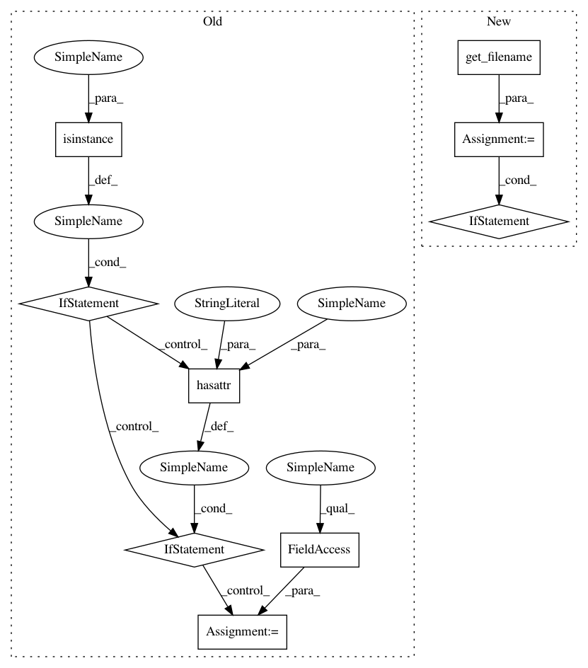

0263f12a8f84d7866a719494bad83f1b57750093,skgenome/tabio/__init__.py,,safe_write,#Any#Any#,183
Before Change
// Log the output path, if possible
if verbose:
if isinstance(outfile, basestring):
outfname = outfile
elif hasattr(outfile, "name") and outfile not in (sys.stdout,
sys.stderr):
outfname = outfile.name
else:
// Probably stdout or stderr -- don"t ruin the pipeline
return
logging.info("Wrote %s", outfname)
def get_filename(infile):
After Change
// Log the output path, if possible (but don"t contaminate stdout)
if verbose:
outfname = get_filename(outfile)
if outfname:
logging.info("Wrote %s", outfname)
def get_filename(infile):
if isinstance(infile, basestring):
return infile
if hasattr(infile, "name") and infile not in (sys.stdout, sys.stderr):
In pattern: SUPERPATTERN
Frequency: 3
Non-data size: 9
Instances
Project Name: etal/cnvkit
Commit Name: 0263f12a8f84d7866a719494bad83f1b57750093
Time: 2018-02-22
Author: eric.talevich@gmail.com
File Name: skgenome/tabio/__init__.py
Class Name:
Method Name: safe_write
Project Name: etal/cnvkit
Commit Name: 0263f12a8f84d7866a719494bad83f1b57750093
Time: 2018-02-22
Author: eric.talevich@gmail.com
File Name: skgenome/tabio/__init__.py
Class Name:
Method Name: read
Project Name: etal/cnvkit
Commit Name: 0263f12a8f84d7866a719494bad83f1b57750093
Time: 2018-02-22
Author: eric.talevich@gmail.com
File Name: skgenome/tabio/__init__.py
Class Name:
Method Name: write